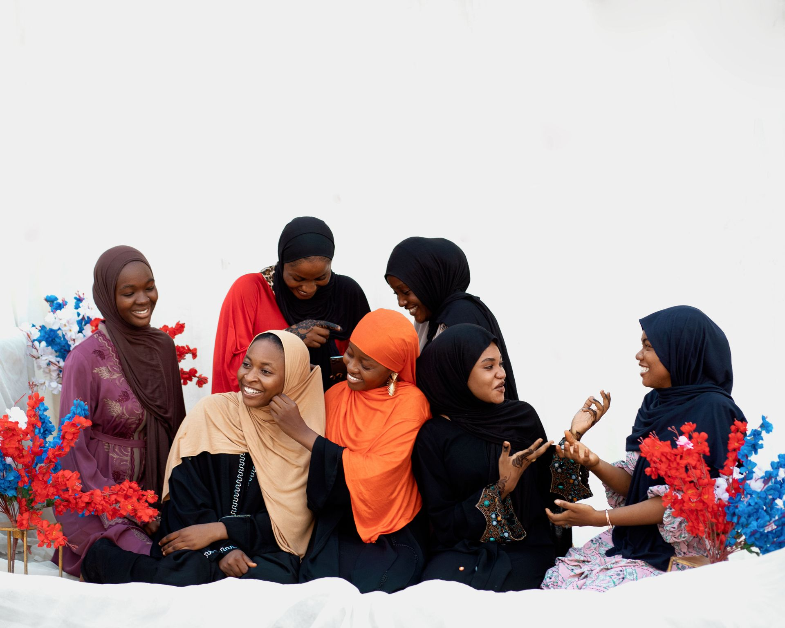
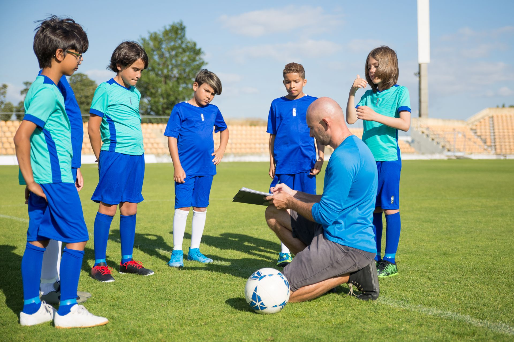

En ideell förening i Borås som samlar barn, ungdomar och kvinnor kring idrott, kultur och stöd i vardagen.
Iqra Idrott och Kulturförening, även registrerad som Iqra Barn Ungdom och Kvinna Förening, är en ideell förening i Borås, bildad 2016. Föreningen är en intresseorganisation inom idrott och kultur, med särskilt fokus på stöd för barn, ungdomar och kvinnor i närområdet kring Hässleholmen. Målet är enkelt: ett tryggt, aktivt sammanhang där grannar blir lagkamrater och nya i Sverige hittar en gemenskap att växa i.
Fysisk aktivitet är kärnan i föreningens verksamhet, ett sätt att bygga hälsa, disciplin och vänskap över generationsgränser. Idrotten är öppen för barn och ungdomar i alla åldrar och ger en naturlig ingång till föreningslivet för familjer som är nya i Borås.
Föreningen skapar utrymme för kulturella möten och gemensamma aktiviteter som stärker sammanhållningen i området. Kultur och gemenskap går hand i hand med idrotten, samma mötesplats, samma medlemmar, samma mål: att ingen ska stå utanför.
Föreningens tredje ben, vid sidan av idrotten och kulturen, enligt föreningens registrerade verksamhetsbeskrivning.
Stöd och aktiviteter riktade till barn och unga i föreningens närområde, med idrotten och gemenskapen som verktyg.

En del av föreningens uppdrag är riktat särskilt till kvinnor, föreningen är sedan starten även registrerad som Iqra Barn Ungdom och Kvinna Förening.
Iqra Idrott och Kulturförening registrerades som ideell förening den 22 september 2016 och drivs av och för invånarna i sitt närområde. Föreningen har sin postadress på Distansgatan 25, med Madina Mohamed som kontaktperson (c/o) hos Bolagsverket. Som ideell förening utan anställda bygger verksamheten på engagemang från medlemmarna själva.
Den här sidan är ett obeställt koncept, se footern längst ner för mer information.
Föreningens eget konto, @iqra_forening_, är just nu det mest aktuella sättet att se vad som faktiskt händer i föreningen och det enklaste sättet att nå dem direkt.
Distansgatan 25, lgh 1202, 507 40 Borås
c/o Madina Mohamed
Telefon och e-post är inte publikt registrerade hos Bolagsverket. Enklaste sättet att nå föreningen just nu är via Instagram.
Skriv till @iqra_forening_ →